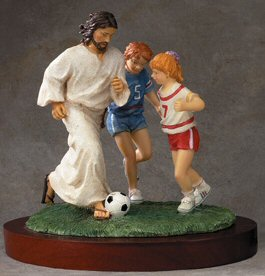
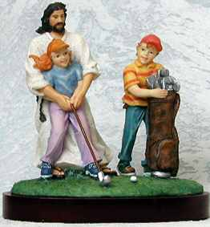

Monday, May the 1st, 2006
back to: title, date or indexes
Dear Mr Key, writes Pansy Cradledew, I fear I must protest that you gave publicity to Jesus Inspirational Sport Statues by including it as one of your so-called ‘detours' yesterday. In many of the representations, Jesus is shown inappropriately dressed for the sport, such as attempting to kick a football in sandals, or perform ballet in an ancient Hebrew shift. By choosing not to wear kneepads or safety helmet when rollerblading, Our Lord is setting a poor example to today's youth with His reckless behaviour. In many of the scenes, He only seems to be participating in the sport half-heartedly, just standing around with His arms posed in what He thinks is some kind of benevolent attitude. It's all a bit wishy-washy and unsportsgodlike. As for the golf statue, should He not be mindful of the traumas the Roman Catholic church has undergone in recent years due to the antics of its less salubrious priests? Yours in Christ, Pansy Cradledew.

Having reviewed the site, and looked more carefully at some of the statues, I think Pansy has a point. In any case, would it not be more inspirational to show the little tots with Satan looming over their shoulders, threatening them with fire and brimstone unless they perked their ideas up and went out there to win? Where can I find Beelzebub Inspirational Sport Statues?